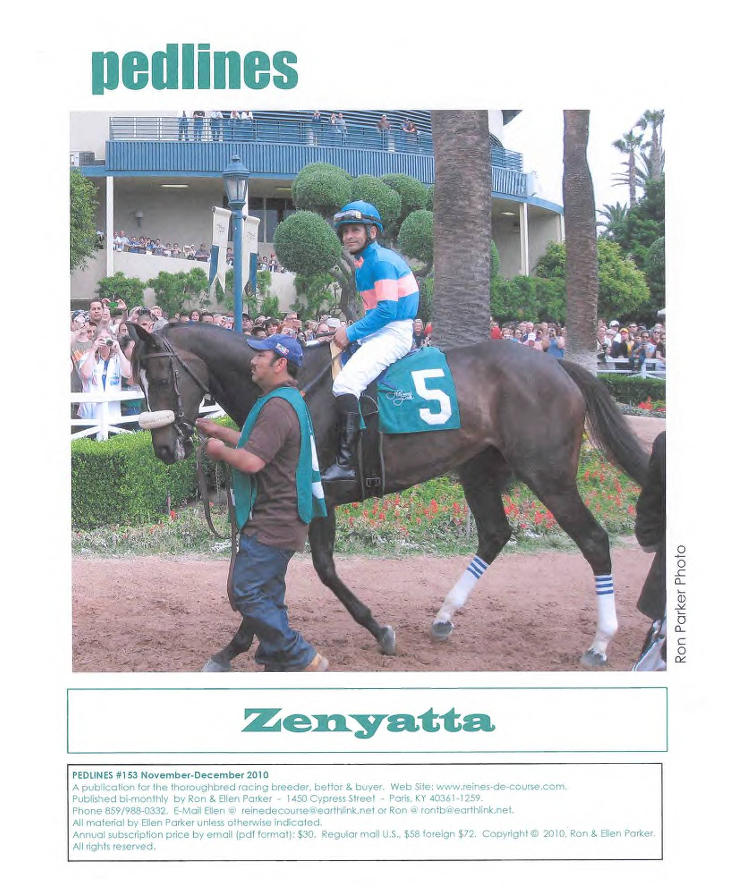

|
The most comprehensive source of information about Thoroughbred families on the web New/Updates August 30 Updated and refined Reine and Family lists
August 18 PEDLINES #157, July-August 2011 contents: Commentary - The St. Simon Question Juddmonte Foundation Mares Inbred of the Month: Her Smile Ron's Little Corner of the Paddock Reines in the Classics Reflections: Brown Bess Sales Lookbacks (Caveat Emptor): Fusaichi Samurai, Ever Shining New Reines: Malva, Frankly, Croda Alta, *Croda Rossa, Prairie Song, Prairie Rose, *Lily of the Valley, *Minstrel Girl II, Sky Fever, Kenmist
◘◘◘◘◘◘
August 11 -Bellesoeur, Boola Brook, Sister Shannon
◘◘◘◘◘◘
July 11 - New reprint at On The Lite Side: The Saga of Snowflake, or: A Little Girl's Faith
◘◘◘◘◘◘

Now available for purchase, the print edition of Pedlines #153, our 50-page special tribute to Zenyatta issue. Contents
Horse of the Month by Ellen Parker, reprinted from American Turf Monthly, October 2008 More Alike Than You Think (Zenyatta-Rachel Alexandra) by Ellen Parker from Pedlines, Sept-Oct 2009 (They) Let The Big Horse Run (Ladies Secret Stakes) by Ellen Parker, reprinted from American Turf Monthly, Dec 2010 Perfect by Ellen Parker, original draft of Guest Commentary printed in Thoroughbred Times, July 10, 2010 My Sense of Wonder Is Back (Clement L Hirsch) by Ellen Parker, reprinted from Washington Thoroughbred, Sept-Oct 2010 Tale of the Green Saddle Cloths (2010 Breeders' Cup) by Ellen Parker, originally published on our website Breeding Zenyatta by Ellen Parker, reprinted from Pedlines, Nov-Dec 2009 (includes hypothetical six cross matings of Zenyatta with Giant's Causeway, Mizzen Mast, A.P. Indy, Hat Trick, and Giacomo). Horse of the Year by Ron Parker, original for the issue Reine-de-Course Legendra (Zenyatta's family) by Ellen Parker, reprinted from Pedlines, Sep-Oct 2008
Our subscribers are our best advertisement:
"What a keeper this is. I enjoy all your issues but this one is extra special." --J.L., New York "Your article, 'My Sense of Wonder Is Back' was especially wonderful, and brought tears to my eyes." --D.P., Nebraska "Incredibly well done, from the heart--I really don't have the words to let you know how much this issue resonated with me." --J.M., Virginia "Thank you for the great double issue on Z." --D.G., Venezuela "Love the Zenyatta issue, am going to take it home and read it cover to cover." --S.V.D., Washington
Our price? Priceless, but you can get it for $10, postage paid.
Want a free sample issue of Pedlines? Simply email us at etaoin@peoplepc.com with the subject "Pedlines Sample" and we'll email a copy of our most recent issue. Want to subscribe? Click on "Pedlines" for information. New subscribers will receive as a bonus an email edition of Pedlines #153, our 50-page Zenyatta special.
Email Contact Information: Ellen Parker - reinedecourse@earthlink.net Ron Parker - etaoin@peoplepc.com
|
Local Archive Extensions
The recovered 2011 homepage remains intact above. These grouped links now serve as compact entry paths into the expanded article, bloodlines, awards, and family subpages.